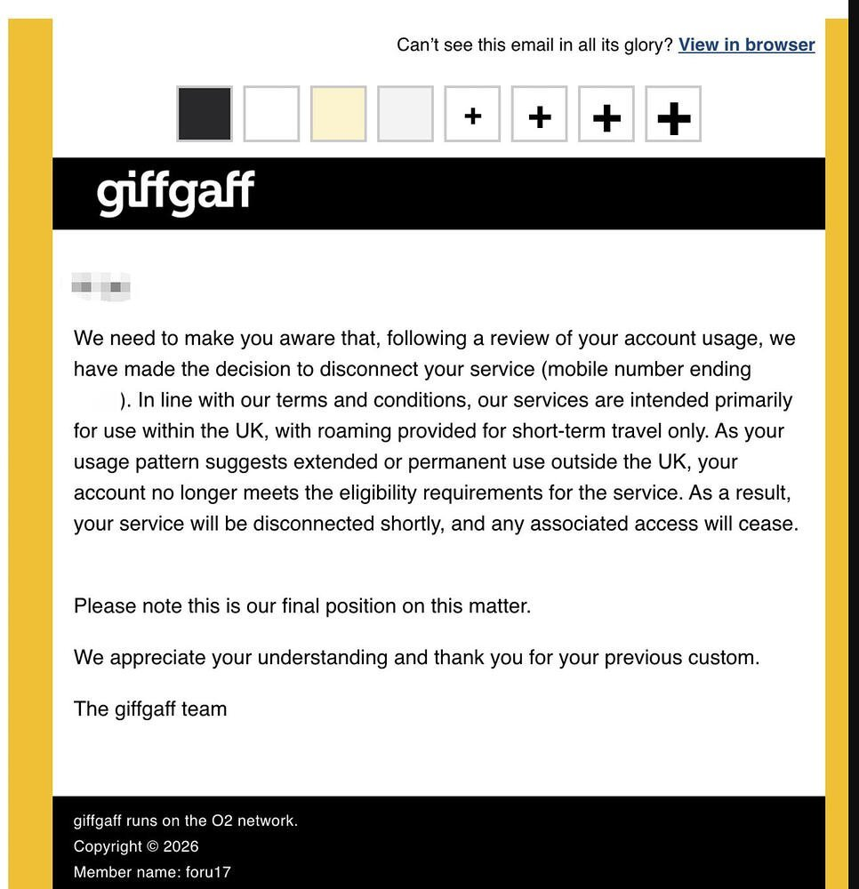

Catherina（赛博咬人黑猫）
@CatherinaMeow
@CryptoJHK 澳大利亚 aldi mobile

AI军火库
@CryptoJHK
7月27日起 #giffgaff电话卡 开始清退海外用户
我查了下公开信息，giffgaff 没有看到“全面清退”公告，但它一直有 UK 常住 + 63 天游漫游的规则。
这次邮件更像是对长期海外账号的定向执行。
对中国用户最实用的做法：别把它当长期海外主卡；重要验证码尽快迁移，别等停号才补救。 https://t.co/MvNHoUF0kS